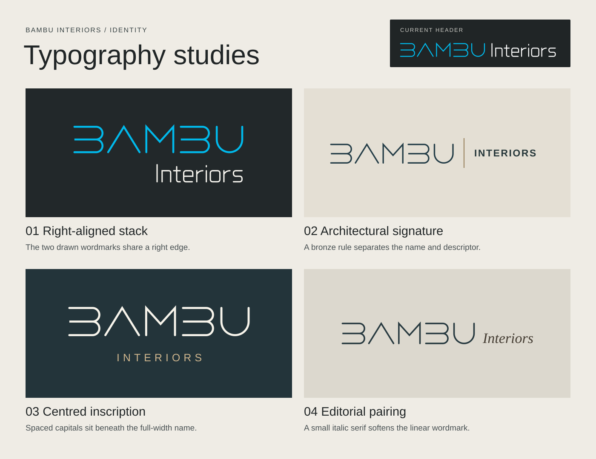
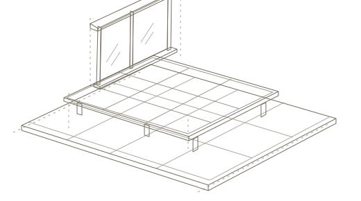
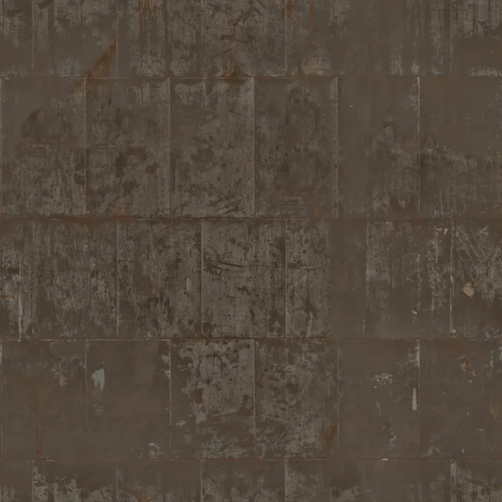
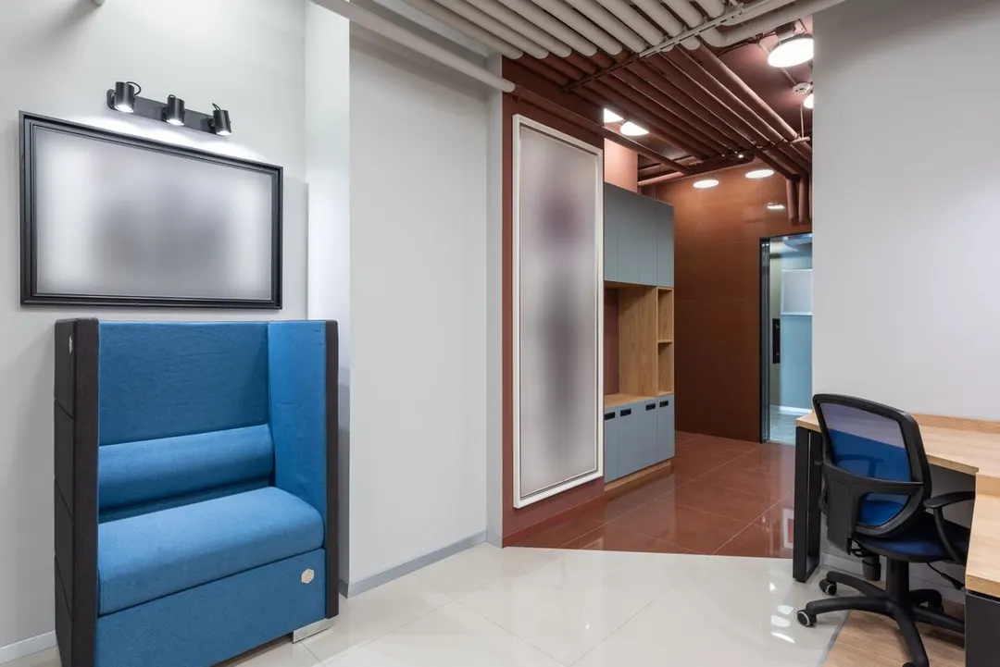
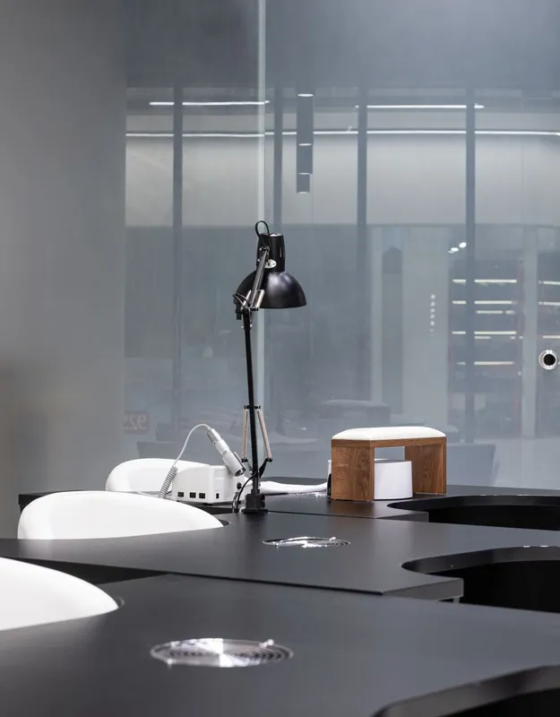

BAMBU / VISUAL DIRECTION / PRIVATE REVIEW
One identity.
Several directions.
This is a design review, not a published portfolio. The live website retains its current logo until a direction is selected.
01 / BRAND LANGUAGE
The wordmark, in context.
Four explorations of the BAMBU identity. Option 02 is the proposed architectural direction; it is not yet an approved replacement for the header.

02 / ARCHITECTURAL STUDIES
Drawn with restraint.
Original illustrative studies give the site an architectural vocabulary without suggesting these are project drawings or genuine Revit exports.


03 / SAME SPACE, THREE VIEWS
Sketch → Model → CGI.
All three images show the same reception composition. The middle image is a tonal illustration rather than a BIM or Revit model export.


04 / WORKPLACE INTELLIGENCE
Illustration with a purpose.
A new conceptual plan pairs design intent with the practical questions an occupier should ask.

05 / MATERIAL & PRODUCT ATMOSPHERE
Evidence before novelty.
These reference images support product and material storytelling. They do not represent BAMBU-completed projects.






DESIGN REVIEW / NEXT DECISION
A direction worth refining.
The visual system can evolve while the website remains truthful about BAMBU's new beginnings. The four logo options are proposals, not a change of identity.
Return to BAMBU Interiors